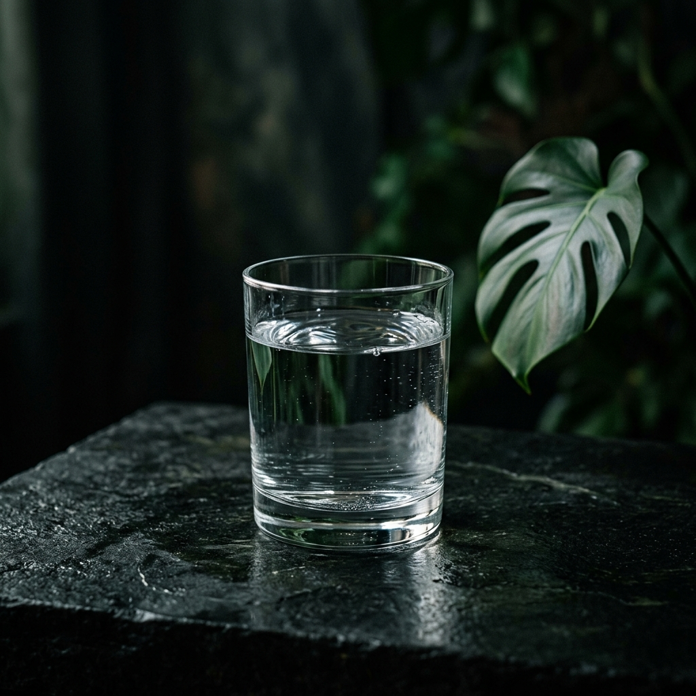
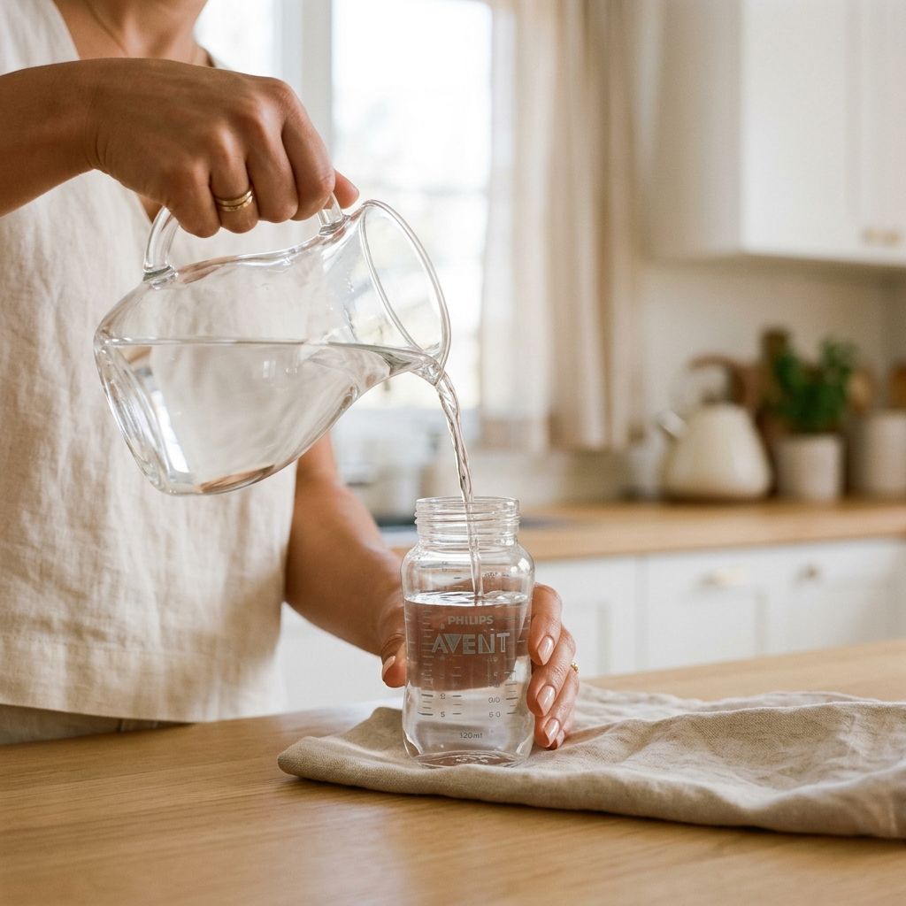

El estandarte de la pureza. Agua libre de cloro y metales pesados, diseñada para las necesidades más delicadas de tu hogar. The standard of purity. Water free of chlorine and heavy metals, designed for the most delicate needs of your home.
La tecnología Kangen no solo ioniza; el primer paso es la purificación absoluta. El filtro de alto rendimiento elimina impurezas, cloro, metales pesados y otros contaminantes presentes en el agua corriente. Kangen technology doesn't just ionize; the first step is absolute purification. The high-performance filter removes impurities, chlorine, heavy metals, and other contaminants present in tap water.
"El resultado es un agua limpia, segura y con sabor neutro, devolviendo al agua su estado más honesto." "The result is clean, safe water with a neutral taste, returning water to its most honest state."

El agua pH 7.0 es el aliado ideal para la preparación de fórmulas infantiles o alimentos para niños pequeños. Al ser un agua neutra y pura, carece de componentes que puedan ser agresivos para un organismo en pleno desarrollo. pH 7.0 water is the ideal ally for preparing baby formulas or food for young children. As a neutral and pure water, it lacks components that could be aggressive for a rapidly developing organism.
La neutralidad del pH 7.0 es fundamental cuando el agua actúa como vehículo para preparados químicos o farmacéuticos. Las vitaminas efervescentes y los medicamentos están testados clínicamente en agua corriente neutra. The neutrality of pH 7.0 is fundamental when water acts as a vehicle for chemical or pharmaceutical preparations. Effervescent vitamins and medications are clinically tested in neutral tap water.
"Se aconseja el uso de pH 7.0 para medicamentos y vitaminas para asegurar que se asimilen según lo previsto por el laboratorio. Personalmente, yo uso el pH 9.5 para disolver mis vitaminas y potenciar su efecto antioxidante, pero el pH 7.0 es el estándar de seguridad clínica absoluta." "The use of pH 7.0 is advised for medications and vitamins to ensure they are absorbed as intended by the laboratory. Personally, I use pH 9.5 to dissolve my vitamins and boost their antioxidant effect, but pH 7.0 is the standard for absolute clinical safety."